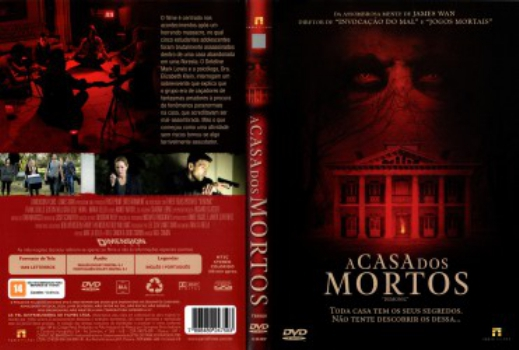

A Casa dos Mortos (2015)


Every House Has Its Secrets

Avaliação (TMDb):


5.2/10 (370 votos)
Avaliação (Usuário):
Outro Título:Demonic (Título Original)
País:United Kingdom, 83 minutos
Idiomas falados:Inglês, Português
Gênero(s):Suspense, Terror
Diretor(s):Will Canon
Codec:MPEG-2 (DVD)
Número: 700
Sinopse:
Um massacre acontece numa casa abandonada deixando cinco estudantes mortos. Um policial (Frank Grillo) e uma psicóloga (Maria Bello) vão investigar o caso, que ocorreu enquanto os jovens tentavam evocar fantasmas.
Elenco:
Maria Bello, Frank Grillo, Cody Horn, Dustin Milligan, Megan Park, Scott Mechlowicz, Aaron Yoo, Alex Goode, Ashton Leigh, Terence Rosemore
Tipo de mídia: DVD5,
Legendas: Inglês, Português
Alugado: Não
Tela: 16:9 Widescreen